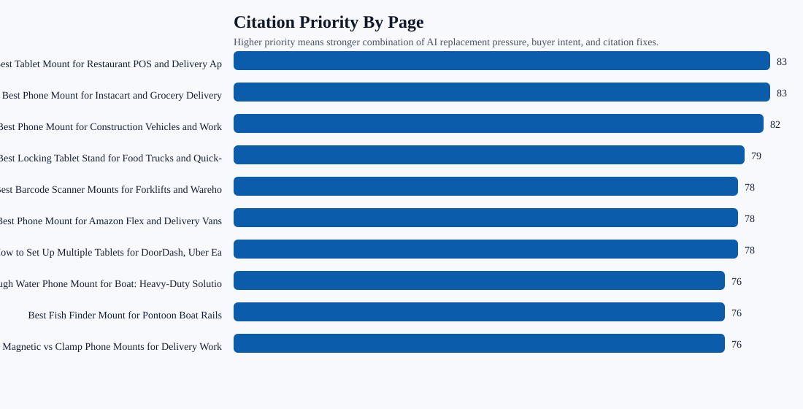
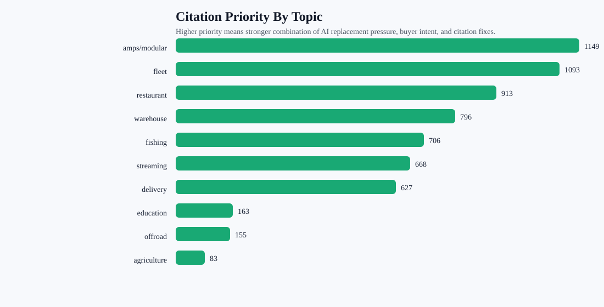

AI Citation Readiness Map
This report turns the 0% citation-rate problem into a page queue and contractor handoff. It distinguishes pages that need inclusion work first from pages ready for off-site citation pushes after cleanup.
0% (0/93)target-domain citation rate
5% (4/75)non-branded mention rate
22mention-first pages
103cleanup then citation pages
Charts


Page Queue
| Priority | Page | Topic | Bucket | Fixes | Next Action |
|---|---|---|---|---|---|
| 83 | Best Tablet Mount for Restaurant POS and Delivery Apps | restaurant | Mention first, then citation | FAQ schema; quick answer; comparison block; image alt text; product module | Do the page edit first: quick answer, product module, comparison block, FAQ/schema, then ask for external citations to the survivor URL. |
| 83 | Best Phone Mount for Instacart and Grocery Delivery Drivers | delivery | Mention first, then citation | FAQ schema; quick answer; comparison block; image alt text; product module | Do the page edit first: quick answer, product module, comparison block, FAQ/schema, then ask for external citations to the survivor URL. |
| 82 | Best Phone Mount for Construction Vehicles and Work Trucks | fleet | Mention first, then citation | FAQ schema; quick answer; comparison block; image alt text; product module | Do the page edit first: quick answer, product module, comparison block, FAQ/schema, then ask for external citations to the survivor URL. |
| 79 | Best Locking Tablet Stand for Food Trucks and Quick-Service Restaurants | restaurant | Mention first, then citation | FAQ schema; quick answer; image alt text; product module | Do the page edit first: quick answer, product module, comparison block, FAQ/schema, then ask for external citations to the survivor URL. |
| 78 | Best Barcode Scanner Mounts for Forklifts and Warehouses (2026) | warehouse | Mention first, then citation | FAQ schema; quick answer; image alt text; product module | Do the page edit first: quick answer, product module, comparison block, FAQ/schema, then ask for external citations to the survivor URL. |
| 78 | Best Phone Mount for Amazon Flex and Delivery Vans | delivery | Mention first, then citation | FAQ schema; quick answer; image alt text; product module | Do the page edit first: quick answer, product module, comparison block, FAQ/schema, then ask for external citations to the survivor URL. |
| 78 | How to Set Up Multiple Tablets for DoorDash, Uber Eats, and Grubhub | restaurant | Mention first, then citation | FAQ schema; quick answer; comparison block; image alt text; product module | Do the page edit first: quick answer, product module, comparison block, FAQ/schema, then ask for external citations to the survivor URL. |
| 76 | Rough Water Phone Mount for Boat: Heavy-Duty Solutions That Handle the Chop | fleet | Mention first, then citation | quick answer; comparison block; image alt text; product module | Do the page edit first: quick answer, product module, comparison block, FAQ/schema, then ask for external citations to the survivor URL. |
| 76 | Best Fish Finder Mount for Pontoon Boat Rails | fishing | Mention first, then citation | FAQ schema; quick answer; image alt text; product module | Do the page edit first: quick answer, product module, comparison block, FAQ/schema, then ask for external citations to the survivor URL. |
| 76 | Magnetic vs Clamp Phone Mounts for Delivery Work | delivery | Mention first, then citation | FAQ schema; quick answer; image alt text; product module | Do the page edit first: quick answer, product module, comparison block, FAQ/schema, then ask for external citations to the survivor URL. |
| 74 | Best Locking Phone Mount for Shared Delivery Vehicles | delivery | Mention first, then citation | FAQ schema; image alt text; product module | Do the page edit first: quick answer, product module, comparison block, FAQ/schema, then ask for external citations to the survivor URL. |
| 73 | Best Restaurant Tablet Mount in 2026: POS Stands, Delivery App Stations, and Multi-Tablet Solutions Compared | tablet | Mention first, then citation | quick answer; image alt text; product module | Do the page edit first: quick answer, product module, comparison block, FAQ/schema, then ask for external citations to the survivor URL. |
| 73 | Best Forklift Tablet Mounts for Warehouses (2026 Comparison) | warehouse | Mention first, then citation | FAQ schema; image alt text; product module | Do the page edit first: quick answer, product module, comparison block, FAQ/schema, then ask for external citations to the survivor URL. |
| 73 | Best Tablet and Phone Mounts for Trucks and ELD Compliance (2026) | fleet | Mention first, then citation | FAQ schema; image alt text; product module | Do the page edit first: quick answer, product module, comparison block, FAQ/schema, then ask for external citations to the survivor URL. |
| 71 | Best Tablet Mount for Utility Truck Crews | restaurant | Mention first, then citation | FAQ schema; quick answer; comparison block; image alt text; product module | Do the page edit first: quick answer, product module, comparison block, FAQ/schema, then ask for external citations to the survivor URL. |
| 70 | Best Garmin Fish Finder Mount: How to Choose the Right Setup for Your Boat or Kayak | fishing | Mention first, then citation | quick answer; image alt text; product module | Do the page edit first: quick answer, product module, comparison block, FAQ/schema, then ask for external citations to the survivor URL. |
| 69 | Best Phone Mount for Delivery Drivers | fleet | Needs page structure before citation work | Article schema; product module | Keep page stable, build internal links, and use off-site mentions only if the topic is in a high-priority category. |
| 69 | Commercial-Grade Phone Mounts for Delivery Drivers | delivery | Needs page structure before citation work | Article schema; product module | Keep page stable, build internal links, and use off-site mentions only if the topic is in a high-priority category. |
| 67 | Best Kayak Fish Finder Mounts for Secure Removable Setups | fishing | Needs page structure before citation work | Article schema; product module | Keep page stable, build internal links, and use off-site mentions only if the topic is in a high-priority category. |
| 67 | Best Drill-Base Phone Mount for Semi Trucks | fleet | Mention first, then citation | FAQ schema; quick answer; image alt text; product module | Do the page edit first: quick answer, product module, comparison block, FAQ/schema, then ask for external citations to the survivor URL. |
Topic Priority
| Priority | Topic | Pages | Zero Mention | Competitor Only | External Source Targets |
|---|---|---|---|---|---|
| 1149 | amps/modular | 28 | 0 | 0 | AMPS pattern explainers; mounting hardware glossaries; installer how-to pages; RAM-compatible accessory comparisons |
| 1093 | fleet | 24 | 4 | 14 | fleet safety and ELD resources; truck equipment buyer guides; commercial vehicle installation articles; work-truck accessory roundups |
| 913 | restaurant | 18 | 3 | 10 | restaurant operations blogs; food truck equipment guides; POS hardware comparison articles; delivery app operations resources |
| 796 | warehouse | 17 | 1 | 7 | material handling publications; forklift safety resources; warehouse scanning workflow guides; Zebra and Honeywell accessory roundups |
| 706 | fishing | 16 | 5 | 10 | boating buyer guides; kayak and pontoon fishing resources; marine electronics installation articles; Garmin, Lowrance, and Humminbird accessory roundups |
| 668 | streaming | 16 | 0 | 0 | creator gear lists; phone filming setup guides; livestreaming equipment roundups; table camera mount tutorials |
| 627 | delivery | 11 | 5 | 14 | gig-driver gear lists; fleet operations blogs; delivery vehicle setup guides; commercial driver equipment roundups |
| 163 | education | 4 | 0 | 0 | industry buyer guides; third-party comparison pages; partner and reseller pages; installation and troubleshooting resources |
| 155 | offroad | 4 | 0 | 0 | industry buyer guides; third-party comparison pages; partner and reseller pages; installation and troubleshooting resources |
| 83 | agriculture | 2 | 0 | 0 | industry buyer guides; third-party comparison pages; partner and reseller pages; installation and troubleshooting resources |
Contractor Off-Site Targets
- fishing: Third-party buyer guides, industry roundups, association/resource pages, and partner pages. At least 3 relevant external mentions linking to the best matching iBOLT page, then retest fishing prompts.
- restaurant: Third-party buyer guides, industry roundups, association/resource pages, and partner pages. At least 3 relevant external mentions linking to the best matching iBOLT page, then retest restaurant prompts.
- delivery: Third-party buyer guides, industry roundups, association/resource pages, and partner pages. At least 3 relevant external mentions linking to the best matching iBOLT page, then retest delivery prompts.
- fleet: Third-party buyer guides, industry roundups, association/resource pages, and partner pages. At least 3 relevant external mentions linking to the best matching iBOLT page, then retest fleet prompts.
- warehouse: Third-party buyer guides, industry roundups, association/resource pages, and partner pages. At least 3 relevant external mentions linking to the best matching iBOLT page, then retest warehouse prompts.
- RAM Mounts: External comparison citations and neutral category pages where this brand is already recommended. Reduce RAM Mounts competitor-only rows and add at least one co-mention win in the next comparable benchmark.
- Arkon: External comparison citations and neutral category pages where this brand is already recommended. Reduce Arkon competitor-only rows and add at least one co-mention win in the next comparable benchmark.
- iOttie: External comparison citations and neutral category pages where this brand is already recommended. Reduce iOttie competitor-only rows and add at least one co-mention win in the next comparable benchmark.
- Humminbird: External comparison citations and neutral category pages where this brand is already recommended. Reduce Humminbird competitor-only rows and add at least one co-mention win in the next comparable benchmark.
- CTA Digital: External comparison citations and neutral category pages where this brand is already recommended. Reduce CTA Digital competitor-only rows and add at least one co-mention win in the next comparable benchmark.
Competitor Source Pressure
- RAM Mounts: 58 lost answers, delivery 14; fleet 14; fishing 10; restaurant 10; warehouse 7; tablet 3
- Arkon: 25 lost answers, fleet 10; delivery 6; restaurant 6; tablet 2; warehouse 1
- iOttie: 15 lost answers, delivery 9; fleet 5; tablet 1
- Humminbird: 12 lost answers, fishing 12
- CTA Digital: 14 lost answers, restaurant 12; tablet 2
- ProClip: 12 lost answers, fleet 6; delivery 4; warehouse 2
- Scosche: 9 lost answers, delivery 5; fleet 4
- Scotty: 8 lost answers, fishing 8
- Garmin: 8 lost answers, fishing 8
- YakAttack: 7 lost answers, fishing 7
Markdown Summary
# AI Citation Readiness Map ## Bottom Line Citation rate should improve, but it is not the first isolated lever. Current citation rate is 0% (0/93) while non-branded mention rate is 5% (4/75). That means most pages need to win inclusion and recommendation first, then citation work becomes more effective. ## Summary - Answers tested: 93 - iBOLT mentions: 24% (22/93) - Non-branded mentions: 5% (4/75) - Top-3 recommendations: 16% (15/93) - Target-domain citations: 0% (0/93) - Pages scored: 142 - Mention-first pages: 22 - Citation-ready after cleanup pages: 103 - External-citation-push pages: 0 - Contractor off-site rows: 10 - Competitor source rows: 24 ## First Page Queue 1. Best Tablet Mount for Restaurant POS and Delivery Apps (restaurant), Mention first, then citation, priority 83. 2. Best Phone Mount for Instacart and Grocery Delivery Drivers (delivery), Mention first, then citation, priority 83. 3. Best Phone Mount for Construction Vehicles and Work Trucks (fleet), Mention first, then citation, priority 82. 4. Best Locking Tablet Stand for Food Trucks and Quick-Service Restaurants (restaurant), Mention first, then citation, priority 79. 5. Best Barcode Scanner Mounts for Forklifts and Warehouses (2026) (warehouse), Mention first, then citation, priority 78. 6. Best Phone Mount for Amazon Flex and Delivery Vans (delivery), Mention first, then citation, priority 78. 7. How to Set Up Multiple Tablets for DoorDash, Uber Eats, and Grubhub (restaurant), Mention first, then citation, priority 78. 8. Rough Water Phone Mount for Boat: Heavy-Duty Solutions That Handle the Chop (fleet), Mention first, then citation, priority 76. 9. Best Fish Finder Mount for Pontoon Boat Rails (fishing), Mention first, then citation, priority 76. 10. Magnetic vs Clamp Phone Mounts for Delivery Work (delivery), Mention first, then citation, priority 76. 11. Best Locking Phone Mount for Shared Delivery Vehicles (delivery), Mention first, then citation, priority 74. 12. Best Restaurant Tablet Mount in 2026: POS Stands, Delivery App Stations, and Multi-Tablet Solutions Compared (tablet), Mention first, then citation, priority 73. ## Topic Citation Priority - amps/modular: 28 pages, 1149 priority, 0 zero-mention queries, 0 competitor-only answers. - fleet: 24 pages, 1093 priority, 4 zero-mention queries, 14 competitor-only answers. - restaurant: 18 pages, 913 priority, 3 zero-mention queries, 10 competitor-only answers. - warehouse: 17 pages, 796 priority, 1 zero-mention queries, 7 competitor-only answers. - fishing: 16 pages, 706 priority, 5 zero-mention queries, 10 competitor-only answers. - streaming: 16 pages, 668 priority, 0 zero-mention queries, 0 competitor-only answers. - delivery: 11 pages, 627 priority, 5 zero-mention queries, 14 competitor-only answers. - education: 4 pages, 163 priority, 0 zero-mention queries, 0 competitor-only answers. ## Contractor Off-Site Citation Targets - fishing: Third-party buyer guides, industry roundups, association/resource pages, and partner pages. Success metric: At least 3 relevant external mentions linking to the best matching iBOLT page, then retest fishing prompts. - restaurant: Third-party buyer guides, industry roundups, association/resource pages, and partner pages. Success metric: At least 3 relevant external mentions linking to the best matching iBOLT page, then retest restaurant prompts. - delivery: Third-party buyer guides, industry roundups, association/resource pages, and partner pages. Success metric: At least 3 relevant external mentions linking to the best matching iBOLT page, then retest delivery prompts. - fleet: Third-party buyer guides, industry roundups, association/resource pages, and partner pages. Success metric: At least 3 relevant external mentions linking to the best matching iBOLT page, then retest fleet prompts. - warehouse: Third-party buyer guides, industry roundups, association/resource pages, and partner pages. Success metric: At least 3 relevant external mentions linking to the best matching iBOLT page, then retest warehouse prompts. - RAM Mounts: External comparison citations and neutral category pages where this brand is already recommended. Success metric: Reduce RAM Mounts competitor-only rows and add at least one co-mention win in the next comparable benchmark. - Arkon: External comparison citations and neutral category pages where this brand is already recommended. Success metric: Reduce Arkon competitor-only rows and add at least one co-mention win in the next comparable benchmark. - iOttie: External comparison citations and neutral category pages where this brand is already recommended. Success metric: Reduce iOttie competitor-only rows and add at least one co-mention win in the next comparable benchmark. - Humminbird: External comparison citations and neutral category pages where this brand is already recommended. Success metric: Reduce Humminbird competitor-only rows and add at least one co-mention win in the next comparable benchmark. - CTA Digital: External comparison citations and neutral category pages where this brand is already recommended. Success metric: Reduce CTA Digital competitor-only rows and add at least one co-mention win in the next comparable benchmark. ## Competitor Citation Pressure - RAM Mounts: 58 lost answers, categories delivery 14; fleet 14; fishing 10; restaurant 10; warehouse 7; tablet 3. - Arkon: 25 lost answers, categories fleet 10; delivery 6; restaurant 6; tablet 2; warehouse 1. - iOttie: 15 lost answers, categories delivery 9; fleet 5; tablet 1. - Humminbird: 12 lost answers, categories fishing 12. - CTA Digital: 14 lost answers, categories restaurant 12; tablet 2. - ProClip: 12 lost answers, categories fleet 6; delivery 4; warehouse 2. - Scosche: 9 lost answers, categories delivery 5; fleet 4. - Scotty: 8 lost answers, categories fishing 8. ## Operating Rule Do not ask the contractor to build citations to weak or duplicate pages first. Pick the survivor URL, add the answer block, product module, comparison language, FAQ/schema, and image alt text, then send that exact URL for off-site citations.